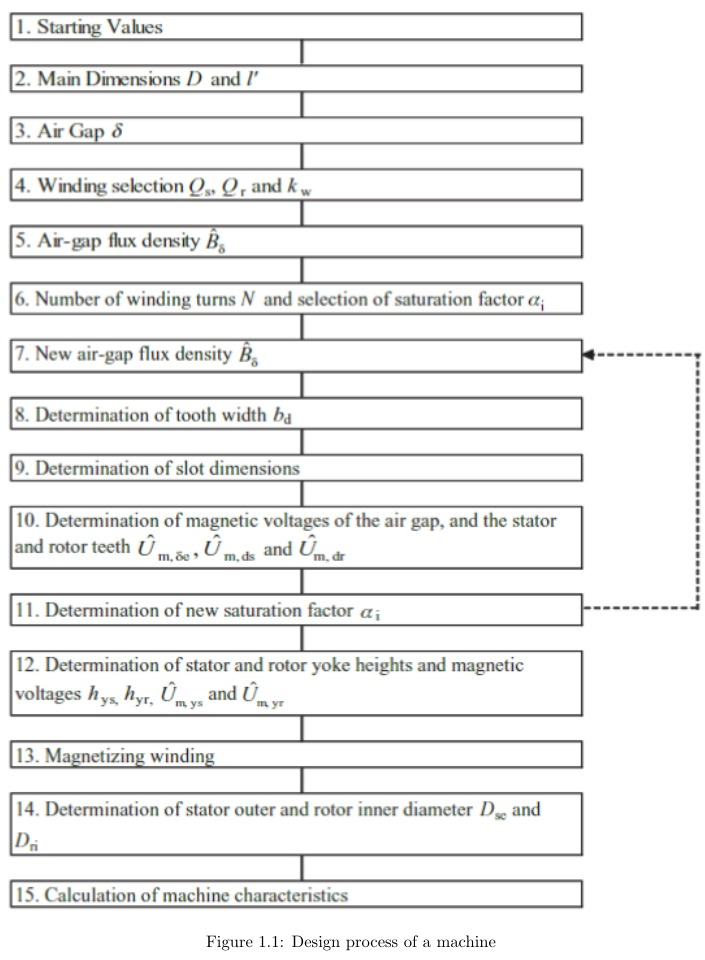
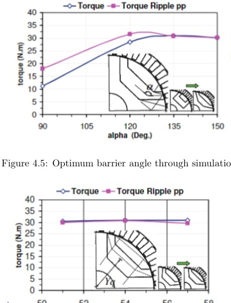

Overview
This individual seminar study examined the design methodology of a synchronous reluctance motor, from general rotating-machine sizing through stator design and the rotor geometry that creates magnetic saliency.

Rotor design
The technical focus is the transversely laminated anisotropic rotor. Flux barriers are positioned to provide a low-reluctance d-axis and high-reluctance q-axis, increasing the difference between Ld and Lq and therefore reluctance torque.

Torque, ripple & optimization
The report studies the effect of barrier angle and radial position on average torque and torque ripple, and discusses FEM as the next stage after analytical geometry selection to capture saturation, leakage and complex barrier interactions.

The report studies FEM-based design methodology; it does not document a complete FEM model independently built and validated by the author.
Original source
The project narrative above is condensed from the submitted coursework/thesis and keeps design estimates, simulation results and demonstrated hardware distinct.